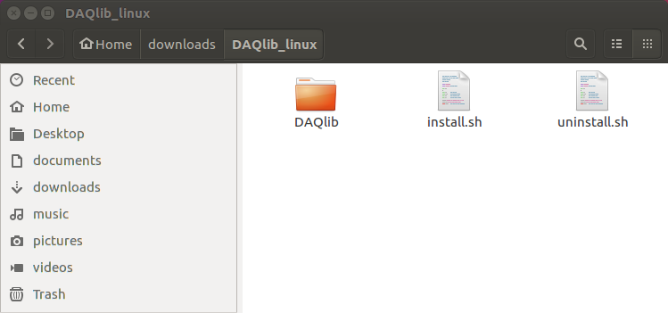
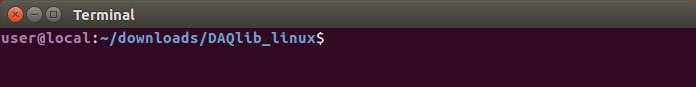
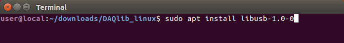
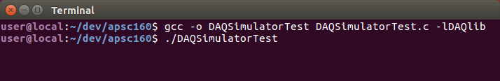
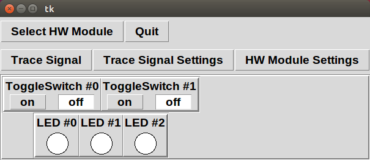
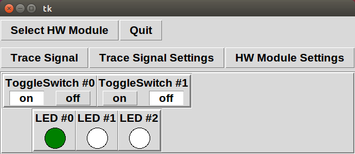

DAQlib Library and Simulator
- Installation
- Your First Project
On Linux, we will install the DAQlib library and simulator globally, for all users of the system. This will require root access.
Installation:
To install the DAQlib library and simulator on Linux, we will first download a zip file containing all the required headers, libraries, and binaries, and then run an installation script that will put the files in a location where GCC can find them. The library and these instructions have been tested on Ubuntu 16.04.- Download the DAQlib zip file from connect. For Linux users, the link should have the title DAQlib for Linux. This should create a zip file called DAQlib_linux.zip in your downloads folder.
- Unzip the file by right-clicking on DAQlib_linux.zip and selecting Extract Here from the drop-down menu.  Inside the unzipped folder, you should see a new subfolder named DAQlib, as well as two script files: install.sh and uninstall.sh.
- Open a terminal and navigate to the folder containing the extracted files. 
- The DAQlib hardware interface relies on an external library, libusb-1.0. This should already be installed on most systems. However, if it is not, we must install it. On Ubuntu and other Debian-based systems, we can do this from the terminal using the apt command: 
-
Run the install.sh script from the terminal. It must be run with root privileges in order to install necessary device information, and to copy files to a global location.
The script will first ask you to confirm installation, then prompt you for an installation prefix (defaults to /usr/local if left blank). It will then install- all headers to $PREFIX/include
- all libraries to $PREFIX/lib
- all binaries to $PREFIX/bin
Uninstalling the Library:
To uninstall the DAQlib library, simply run the uninstall.sh script. It will again prompt you for the installation prefix used for installation, then will remove all files.
A Simple DAQ Program
To get started, we will create a simple program that uses the DAQ simulator.
Create a new source file with your favourite text editor or IDE. It should be given a descriptive name (e.g. DAQSimulatorTest.c) Modify the code so that it looks like the following. Include your own name, student number, ... at the top of the code (the green text in the code below).We do not expect you to understand the code that you are typing yet (that will come in the next few weeks).
To compile, link and run the program from the command-line, navigate to the source file location in a terminal, and enter the following:  Note the -lDAQlib option, which tells our program to link with the DAQlib library. If everything was installed successfully, the simulator should appear:  Click the "on" radio button for the switch labelled ToggleSwitch #0. The left-most LED should turn green:  Congratulations! You have just completed your first DAQ program.